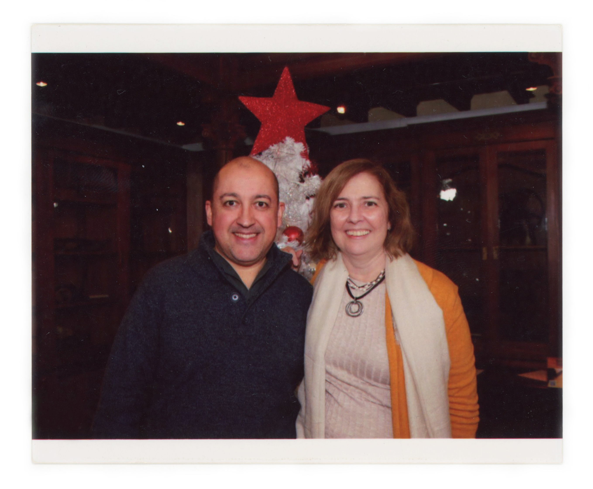

pt
en
Thanks: Margarida Pereira, Alzira Pereira, Carlos Nascimento, Clotilde Abrantes, Marco Paiva, Francisco Paiva, Henrique Martins, Sara Martins, Anabela Ferro, Amy, José Luís Mesquita, José Inácio, Pedro Azevedo, Guilherme de Sousa, Sara Costa, Roberto Costa, Simão Telles, Ary, Volpina Castilho, Igrat Castilho, João Galego, Olivia Rodrigues, Inês Jacob, Ricardo Jacob, Nory Sabina, Elisa Lasprilla, Diogo Friaes Coelho, Ginja, Adelino Ângelo, La-Salett Magalhães, Emmanuel, Amigo, Vera Matias, Inês Pando, Zezé Cordeiro, Maria Salomé Alvarenga, Catarina Garcia, Guilherme Garcia, Nela Duarte, Jericó, Maria, Nuno, Cristina Sampaio, Zebá, Heloise Marechal, Margarida, Simon Saleh-Hughes, Ginja, Natacha Cordeiro, Licínia Ferreira, Carla Vendas, Pedro Vendas, Diana, Nelson, Ângelo Ferreira, Bliss, Maria Manuela, Inês Campos, Teresa Melo e Campos, Levon Mouradian, Nariné Dellalian, Simão Pais, Oito, Maria Trindade, Conceição Trindade, Raffat Dabah, Fatima Ghannam, Luísa Louro, Miguel Morato, Maria Neto, Henrique Neto, Ringo Nogueira, Carla Monteiro, Ana Carvalho, Lucinda Piloto, Duarte Lopes, Setembro, Jorge Fernandes, Ernesto, Julia Valente, Mateus Mateus, Rita Isabel, Irina Pereira, Maria de Lurdes Arriscado, Maria Isabel, Raphael Decoster, António de Miranda, Tomás Miranda, António Godinho, Maria Teresa Godinho, João Godinho, António Manuel Godinho, Antónia Garcia, Samira Garcia, Jenny Garcia, Vera Prokic, Mateus, Carlos Santos, Kika, Domingas Santos, João Luís Tomás, Rita Amaro, Rafael Baptista, Ana Ventura, Maria Ventura, Ivone Paim, Ice, Conceição Correia de Barros, Eugénia Sá Coutinho, Tatiana Grenkova, Oxana Grenkova, Miguel Canto e Castro, Teresa Canto e Castro, Sádio, Lassana, Seni, Hugo Nunes, Marco Nunes, Luisa Monteiro Guerra, Ringo, Ana Pires, Inês Pires, Pedro Andrade, Tibério Bento.
Obrigada: Margarida Pereira, Alzira Pereira, Carlos Nascimento, Clotilde Abrantes, Marco Paiva, Francisco Paiva, Henrique Martins, Sara Martins, Anabela Ferro, Amy, José Luís Mesquita, José Inácio, Pedro Azevedo, Guilherme de Sousa, Sara Costa, Roberto Costa, Simão Telles, Ary, Volpina Castilho, Igrat Castilho, João Galego, Olivia Rodrigues, Inês Jacob, Ricardo Jacob, Nory Sabina, Elisa Lasprilla, Diogo Friaes Coelho, Ginja, Adelino Ângelo, La-Salett Magalhães, Emmanuel, Amigo, Vera Matias, Inês Pando, Zezé Cordeiro, Maria Salomé Alvarenga, Catarina Garcia, Guilherme Garcia, Nela Duarte, Jericó, Maria, Nuno, Cristina Sampaio, Zebá, Heloise Marechal, Margarida, Simon Saleh-Hughes, Ginja, Natacha Cordeiro, Licínia Ferreira, Carla Vendas, Pedro Vendas, Diana, Nelson, Ângelo Ferreira, Bliss, Maria Manuela, Inês Campos, Teresa Melo e Campos, Levon Mouradian, Nariné Dellalian, Simão Pais, Oito, Maria Trindade, Conceição Trindade, Raffat Dabah, Fatima Ghannam, Luísa Louro, Miguel Morato, Maria Neto, Henrique Neto, Ringo Nogueira, Carla Monteiro, Ana Carvalho, Lucinda Piloto, Duarte Lopes, Setembro, Jorge Fernandes, Ernesto, Julia Valente, Mateus Mateus, Rita Isabel, Irina Pereira, Maria de Lurdes Arriscado, Maria Isabel, Raphael Decoster, António de Miranda, Tomás Miranda, António Godinho, Maria Teresa Godinho, João Godinho, António Manuel Godinho, Antónia Garcia, Samira Garcia, Jenny Garcia, Vera Prokic, Mateus, Carlos Santos, Kika, Domingas Santos, João Luís Tomás, Rita Amaro, Rafael Baptista, Ana Ventura, Maria Ventura, Ivone Paim, Ice, Conceição Correia de Barros, Eugénia Sá Coutinho, Tatiana Grenkova, Oxana Grenkova, Miguel Canto e Castro, Teresa Canto e Castro, Sádio, Lassana, Seni, Hugo Nunes, Marco Nunes, Luisa Monteiro Guerra, Ringo, Ana Pires, Inês Pires, Pedro Andrade, Tibério Bento.
a film by CLÁUDIA VAREJÃO
Aristophanes, in his speech at The Symposium, presents us with his vision of love: at the moment when human beings first existed they had a single body, with four legs, four arms and two faces. These beings were fundamentally safe and invincible, to the point of defying the gods and trying to ascend to the heavens. Zeus, feeling threatened, throws a bolt of lightning that divided them in two halves: on each side were new beings with two legs, two arms, one face and one gender. Since that day, on land, the two halves have been constantly searching for each other.
The aim of Amor Fati is to seek out these halves that, today, have converged again, as though they were chemical elements attracted in the same direction. The present is a moment of destiny in which the parts merge without allowing themselves to be unduly influenced by common sense: they are creatures of intuition. They do not long to be in any other place, have no desire for a different future or past. For two years I searched, in Portugal from north to south, for stories of unshakable love that were expressed, at first glance, in the similarity of physiognomies. I met with hundreds of peers and groups who were right at that moment living stories of rare bonding.
The research resulted in a film (produced by Terratreme, Mira Film and La Belle Affaire). I tried to build a choral side of life, in which the singular gives way to the plural and the micro to the macro. During this process of looking for - and to find - characters, I kept some faces and stories with me. The following photographs are part of that collection and are my affection atlas. To all the people who shared with me a little of their intimacy, my deepest thanks.
This project is a constellation of stories and emotions that express my feeling for humanity which tends to become magnifed in the face of our vulnerability and in the face of death. Creating images is my attempt to overcome the ephemerality of events by incorporating something bigger and more beautiful, like the mystery of encounters.
um filme de CLÁUDIA VAREJÃO
Aristófanes, no seu discurso n’O Banquete, apresenta-nos a sua visão sobre o amor: na origem do ser humano estaria um corpo uno, com quatro pernas, quatro braços e dois rostos. Eram seres seguros e invencíveis, ao ponto de desafiarem os deuses e tentarem ascender aos céus. Zeus, sentindo-se ameaçado, lançou um raio que os dividiu em metades: para cada lado ficaram dois novos seres, com duas pernas, dois braços, um rosto e um sexo. Desde esse dia, em terra, as metades procuram, sem cessar, umas pelas outras.
Amor Fati propõe irmos ao encontro dessas metades que voltaram a convergir, como se fossem elementos químicos atraídos na mesma direcção. O instante presente é um fatum onde as partes se encontram sem se deixarem tomar pela razão: pertencem-se por intuição. Não desejam ocupar outro lugar, outro futuro, outro passado. Durante dois anos procurei em Portugal, de norte a sul, por histórias de amores inabaláveis que se expressavam, à primeira vista, em fisionomias semelhantes. Encontrei-me com centenas de pares e de grupos que viviam, no momento presente, histórias de enlace raro.
A investigação resultou num filme (produzido pela Terratreme, Mira Film e La Belle Affaire). Procurei construir um lado coral da vida, em que o singular deu lugar ao plural e o micro ao macro. Durante este processo de procura - e de encontro - de personagens, fui guardando comigo alguns rostos e histórias. As fotografias que se seguem fazem parte dessa recolha e são o meu atlas de afectos. A todas as pessoas que partilharam comigo um pouco da sua intimidade, o meu profundo obrigada.
Este projecto é uma constelação de histórias e de emoções que expressam o meu sentimento pela humanidade, que tende a engrandecer diante da nossa vulnerabilidade e diante da morte. Criar imagens é a minha tentativa de superar a efemeridade dos eventos, incorporando algo maior, como o mistério dos encontros.